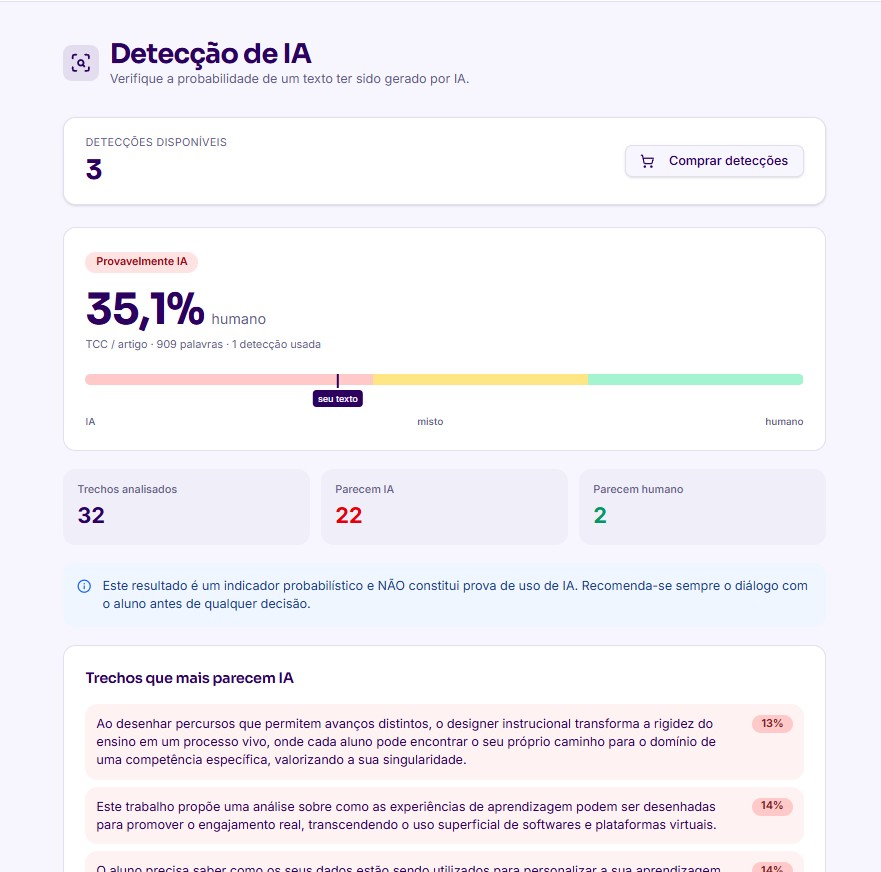

Verifique a originalidade antes de dar a nota
O Rubric Detect IA lê o trabalho trecho por trecho e aponta similaridade textual, baixa originalidade e indícios de escrita artificial. O resultado chega como relatório de apoio à decisão — dentro do mesmo fluxo em que você já corrige, e não como uma ferramenta separada, usada depois.
Indicador probabilístico, nunca prova. Serve para orientar investigação, diálogo e revisão — nunca para punição automática. Quem decide é o professor.

Ver em tamanho real